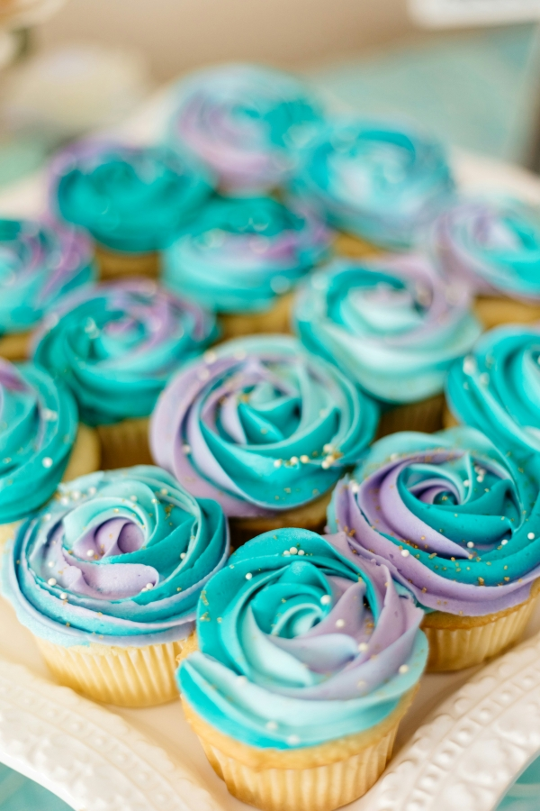

Cupcake Delight is a charming bakery that specializes in creating delicious, freshly baked cupcakes. Located in the heart of downtown, Cupcake Delight offers a welcoming atmosphere and a wide variety of cupcakes in various flavours, sizes, and colours. At Cupcake Delight, the bakers use only the finest ingredients, including high-quality butter, sugar, and flour, to create their scrumptious cupcakes. From classic vanilla and chocolate flavours to more adventurous options such as red velvet, lemon, and peanut butter, there's a cupcake for every taste bud.
The bakery also offers vegan and gluten-free options, ensuring that everyone can enjoy the delicious treats. Each cupcake is handcrafted with care and attention to detail, making them not only delicious but also aesthetically pleasing. In addition to the cupcakes, Cupcake Delight also offers a variety of other baked goods, such as cakes, cookies, and brownies. Customers can also order custom cupcakes for special events, such as weddings, birthdays, and baby showers.
Cupcake Delight is not just a bakery, but a community gathering spot where people come to relax, catch up with friends, and indulge in sweet treats. The bakery has a warm and inviting atmosphere, with comfortable seating and friendly staff who are always ready to help customers choose the perfect cupcake. Whether you're looking for a sweet treat to brighten up your day or need a special dessert for a special occasion, Cupcake Delight is the perfect destination for all your cupcake needs.
